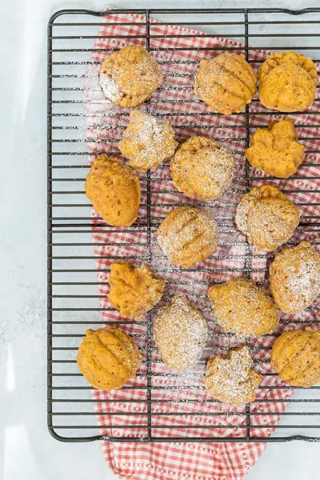

Mini Sweet Potato Muffins

Ingredients
- 1 cup all purpose flour
- 1 cup old fashioned oats
- 1/3 cup brown sugar
- 1 teaspoon baking powder
- 1/2 teaspoon baking soda
- 1/2 teaspoon kosher or sea salt
- 1 teaspoon ground cinnamon
- 2 large eggs, whisked
- 1 cup sweet potato puree
- 1/2 cup milk (any type works)
- 1/4 cup canola or vegetable oil
- 1 teaspoon vanilla extract
Steps
- Preheat oven to 350 F.
- Place the first 7 ingredients in a bowl and whisk to combine.
- In a separate bowl whisk the remaining ingredients.
- Slowly combine the dry ingredients with the wet ingredients just until they are combined (be careful not to over mix the batter).
- Place 1 tablespoon of batter in each cup of greased mini muffin tins and bake for 15 minutes.
Recipe by Weelicious, from Weelicious. Saved here for personal use; the original has the full notes, tips and photos. Open original